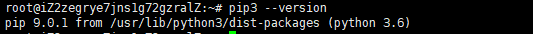
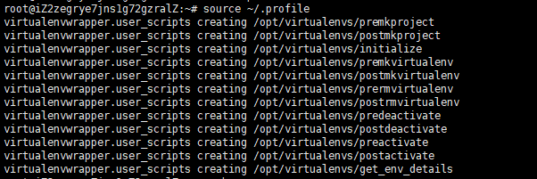
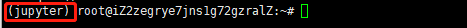
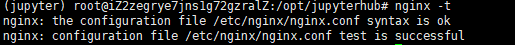
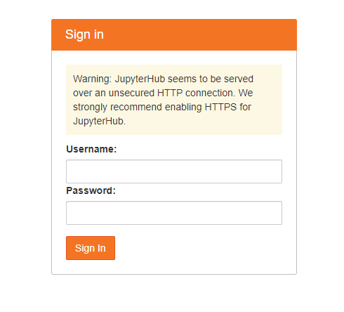
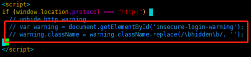
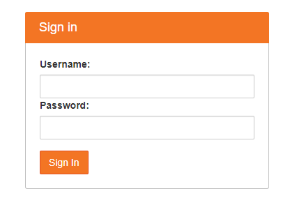

前提条件
本次教程使用的是Ubuntu 18.04,其他Linux distributions请自行测试使用
目标
- 我们将在Python虚拟环境下创建JupyterHub+JupyterLab
- 该虚拟环境将提供所有用户使用
- 自定义模板配置
- 通过Nginx建立一个反向代理提供外部访问使用
第一部分: 创建虚拟环境
Ubuntu 18.04 自带了Python3.6.9,省去了很多安装上的麻烦,我们直接拿来用就可以,但是缺少pip,所以先把pip装上
1 | 更新一下软件列表 |
敲入下面命令检测pip是否安装成功
1 | pip3 --version |
如果打印如下信息说明安装成功

我个人习惯使用virtualenvwrapper创建和管理Python虚拟环境,当然大家也可以使用Python自带的env创建
1 | 安装virtualenvwrapper |
配置虚拟环境相关参数
1 | vim /usr/local/bin/virtualenvwrapper.sh |
做如下修改
1 | # 查找到 |
修改完以后加入系统环境
1 | vim ~/.profile |
追加如下内容
1 | 代表我们会把所有创建的虚拟环境都统一放到这个目录下 |
执行以下代码使我们的配置立即生效
1 | source ~/.profile |
控制台如果打印如下信息说明配置成功

这时候,我们可以开始创建我们的虚拟环境
1 | mkvirtualenv jupyter |
创建成功后,控制台最左边会多出虚拟环境的名字,如图

补充:
1 | 打印出已经创建好的虚拟环境 |
第二部分: 安装JupyterHub 和 JupyterLab
注意: 请在你刚创建好的虚拟环境中执行该部分的操作
安装相应依赖包
1 | pip install jupyterhub jupyterlab |
我们还需要一个代理来接收来自客服端的请求,我们将通过npm包管理器来安装 configurable-http-proxy代理,所以我们先安装npm
1 | sudo apt install nodejs npm |
然后安装 configurable-http-proxy,但是由于GFW的原因,可能会导致安装失败,所以我们首先手动更换一下npm的镜像源
1 | 更换淘宝镜像源 |
接着我们就可以正常执行安装
1 | npm install -g configurable-http-proxy |
第三部分: 配置JupyterHub 和 JupyterLab
为了方便之后的管理,我将会创建在/opt下创建一个文件夹jupyterhub用来管理jupyterhub的相关配置,今后将会使用该目录下的配置文件启动我们的服务器
1 | mkdir /opt/jupyterhub |
在该目录下生成我们的配置文件
1 | cd /opt/jupyterhub |
编辑配置文件
1 | 打开配置文件 |
进行如下修改
1 | c.Spawner.default_url = '/lab' |
第四部分: 配置Nginx
安装Nginx
1 | apt install nginx |
打开Nginx默认配置
1 | vim /etc/nginx/sites-available/default |
修改Nginx默认配置
1 |
|
执行下面代码检测是否配置成功
1 | nginx -t |
打印如下图信息则说明配置成功

这时候我们重启一下nginx
1 | service nginx restart |
打开你的浏览器输入你服务器地址,如下图所示则说明nginx服务启动成功
第五部分: 启动服务器
在刚开始创建的虚拟环境下执行
临时测试:
1 | cd /opt/jupyterhub |
启动到后台挂起:
1 | cd /opt/jupyterhub |
打开浏览器输入: 你的IP地址/jupyter,看到如下图所示,说明服务器配置并启动成功

第六部分: 自定义模板
jupyterhub的页面是根据jinja2生成的,所以你想要修改模板需要先了解jinja2,这里只是抛砖引玉,举一个简单的例子来说明一下,由于我们的网站不是通过https加密,所以你可以看到我们的登录界面有一个丑丑凑得Warning提示,我将修改模板来取消掉该提示
jupyterhub默认的模板文件储存在 /opt/virtualenvs/jupyter/share/jupyterhub/templates下面
所以我们打开login.html做如下修改
1 | vim /opt/virtualenvs/jupyter/share/jupyterhub/templates/login.html |
注释掉如下代码:

然后重启服务器你就能看到效果:

第七部分: 用户管理
到此你会发现,特喵的账号密码是啥?怎么登陆和管理用户
Jupyterhub的Authenticator默认是使用PAM对用户名和密码进行系统身份验证,我们也将采用默认的,这将允许任何在系统上具有帐户和密码的用户登录(root除外)
所以我们首先要添加一个Linux用户,作为例子我将会把该用户设置为管理员
1 | adduser wlb |
根据提示配置完,然后在配置文件里把该用户添加到管理员白名单
1 | vim /opt/jupyterhub/jupyterhub_config.py |
启动服务器,输入账号密码,你就会发现你可以成功登陆到如下主界面
![主界面]{index.png}
作为管理员:
- 可以添加删除用户,以及创建管理员,通过控制台提供的接口进行操作,配置文件将会自动更新
- 管理员将会自动加入白名单
- 管理员可以停止和重启其他人的服务器
困了,先更新到这,未完待续…


{kind=link}